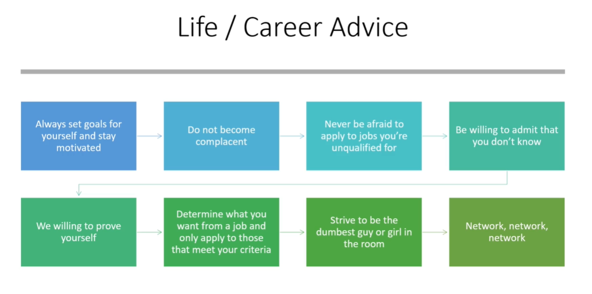

If you find the job interesting simply apply for it.
Couple of things to focus in the interview:
- willing to admit that you don't know answer to this but I am willing to learn
If you don't know the answer simply write it down cuz in the 2nd interview they might ask you that same question again to see that if you actually went back studied it or not.
"You gotta get your foot in the door"
Always be willing to prove yourself,
always be willing to admit your flaws &
your honesty is going to take you very far in life.
When looking for job you should always determine what you want from a job and only apply to those that meet your criteria.
I don't want to take the job just for the Title.
Always strive to be the dumbest guy in the room always.
Network with people,